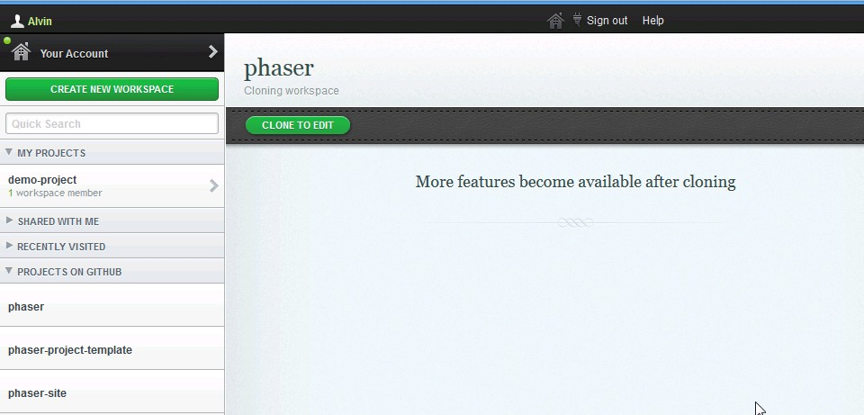
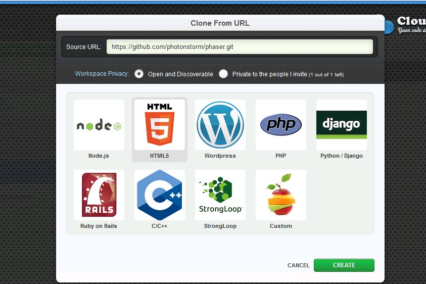
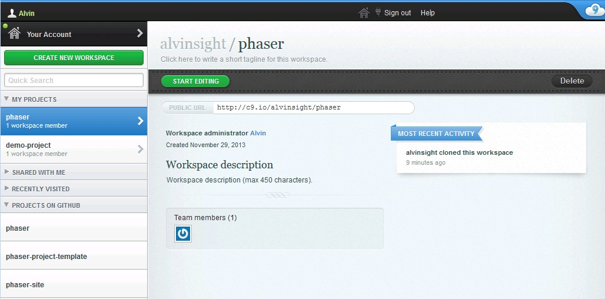
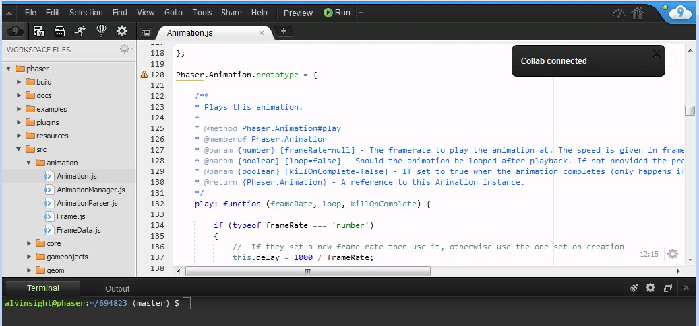

Si no estás cómodo con el clonado de github, o configurar un servidor web, o si no quieres liarte con todo eso, puedes ejecutar Phaser en la nube.
Más que una palabra de marketing de moda, los desarrolladores usan la nube como una herramienta que te permite crear, editar y compartir tu contenido sin tener que instalar nada, ni tú ni la gente con la que compartes tu contenido.
Hay varias herramientas JavaScript de colaboración online como JSBin, codepen y JSFiddle, solo por nombrar algunas.
Hay otra herramienta que recomendamos llamada Cloud9 IDE que te permite arrancar y comenzar muy rápidamente.
Primero, identifícate en la web usando GitHub, y una vez lo hagas serás redirigido a tu Panel de Control
Desde este panel de control, puedes crear proyectos privados o compartidos, o -lo que nos interesa en nuestro caso- puedes crear un proyecto a partir de un repositorio de GitHub.
Haz clic en el botón "create workspace" y selecciona la opción "clone from URL" del menú desplegable.
Una vez que el repositorio está integrado en c9.io, verás esta ventana:
Si haces clic en el botón "start editing" serás redirigido aquí:
Ahora ya tienes una copia del repositorio de Phaser.